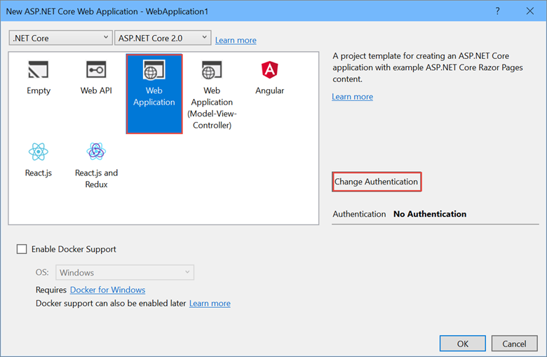
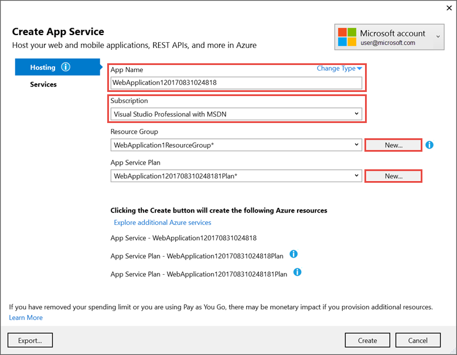
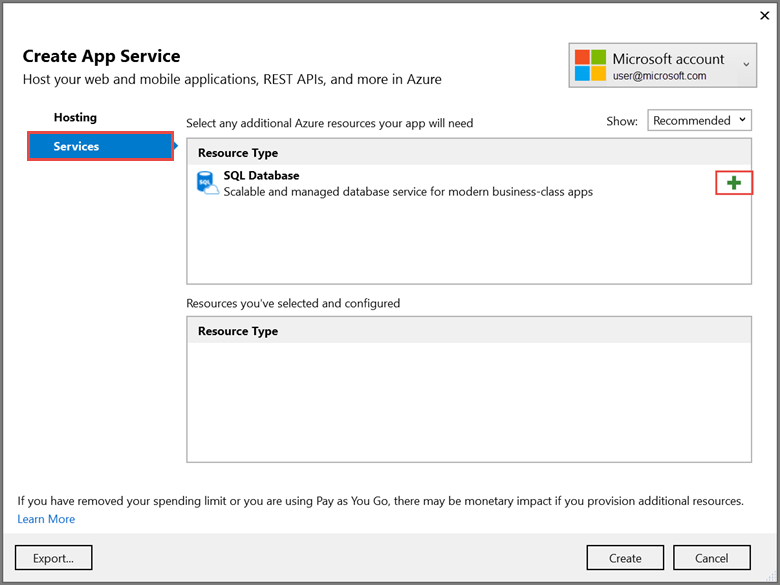
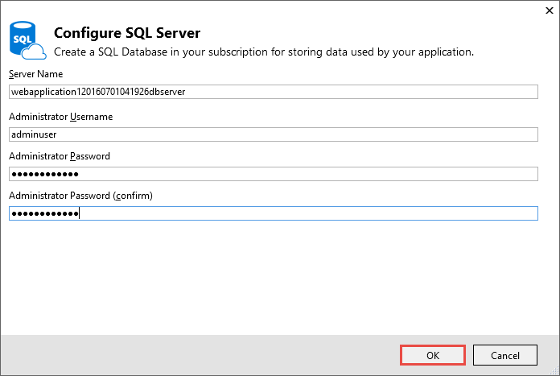
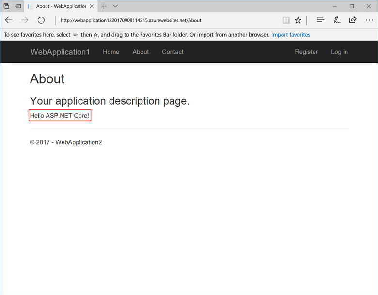

Publish an ASP.NET Core web app to Azure App Service using Visual Studio
By Rick Anderson, Cesar Blum Silveira, and Rachel Appel
Set up the development environment
Install the latest Azure SDK for Visual Studio. The SDK installs Visual Studio if you don't already have it.
Verify your Azure account. You can open a free Azure account or Activate Visual Studio subscriber benefits.
Create a web app
In the Visual Studio Start Page, select File > New > Project...

Complete the New Project dialog:
In the left pane, select .NET Core.
In the center pane, select ASP.NET Core Web Application.
Select OK.

In the New ASP.NET Core Web Application dialog:
Select Web Application.
Select Change Authentication.

The Change Authentication dialog appears.
Select Individual User Accounts.
Select OK to return to the New ASP.NET Core Web Application, then select OK again.

Visual Studio creates the solution.
Run the app locally
Choose Debug then Start Without Debugging to run the app locally.
Click the About and Contact links to verify the web application works.

Select Register and register a new user. You can use a fictitious email address. When you submit, the page displays the following error:
"Internal Server Error: A database operation failed while processing the request. SQL exception: Cannot open the database. Applying existing migrations for Application DB context may resolve this issue."
Select Apply Migrations and, once the page updates, refresh the page.

The app displays the email used to register the new user and a Log out link.

Deploy the app to Azure
Close the web page, return to Visual Studio, and select Stop Debugging from the Debug menu.
Right-click on the project in Solution Explorer and select Publish....

In the Publish dialog, select Microsoft Azure App Service and click Publish.

Name the app a unique name.
Select a subscription.
Select New... for the resource group and enter a name for the new resource group.
Select New... for the app service plan and select a location near you. You can keep the name that is generated by default.

Select the Services tab to create a new database.
Select the green + icon to create a new SQL Database

- Select New... on the Configure SQL Database dialog to create a new database.

The Configure SQL Server dialog appears.
Enter an administrator user name and password, and then select OK. Don't forget the user name and password you create in this step. You can keep the default Server Name.
Enter names for the database and connection string.
Note
"admin" is not allowed as the administrator user name.

- Select OK.
Visual Studio returns to the Create App Service dialog.
- Select Create on the Create App Service dialog.

- Click the Settings link in the Publish dialog.

On the Settings page of the Publish dialog:
Expand Databases and check Use this connection string at runtime.
Expand Entity Framework Migrations and check Apply this migration on publish.
- Select Save. Visual Studio returns to the Publish dialog.

Click Publish. Visual Studio will publish your app to Azure and launch the cloud app in your browser.
Test your app in Azure
Test the About and Contact links
Register a new user

Update the app
Edit the Pages/About.cshtml Razor page and change its contents. For example, you can modify the paragraph to say "Hello ASP.NET Core!":
@page @model AboutModel @{ ViewData["Title"] = "About"; } <h2>@ViewData["Title"]</h2> <h3>@Model.Message</h3> <p>Hello ASP.NET Core!</p>Right-click on the project and select Publish... again.
- After the app is published, verify the changes you made are available on Azure.

Clean up
When you have finished testing the app, go to the Azure portal and delete the app.
- Select Resource groups, then select the resource group you created.

- In the Resource groups page, select Delete.

- Enter the name of the resource group and select Delete. Your app and all other resources created in this tutorial are now deleted from Azure.